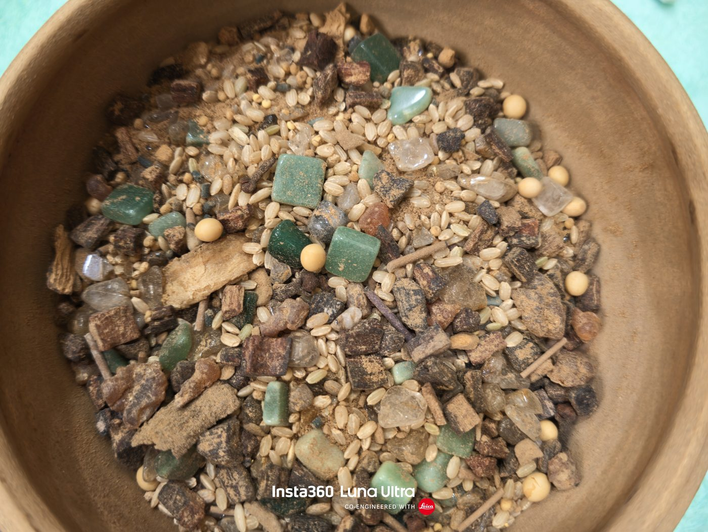
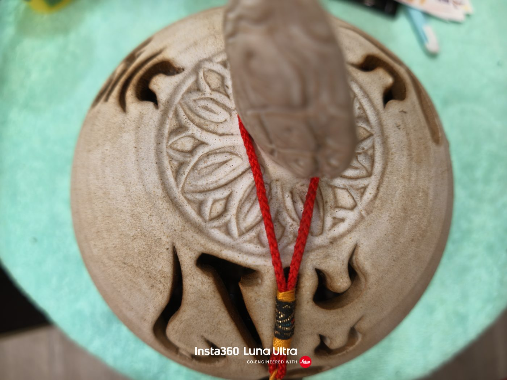

官方服務網站
今彩539聚地
原先的賜號登記已停止。請用本頁預約遠端解事，或結緣開運香粉。
當日可處理完畢，處理完後由本宮私訊通知，請留意近半年內自身感受變化。
涵蓋事業、感情、催財、改運。法師持咒秘儀加持，處理完成後私訊通知，請留意近一個月內的狀況變化。
售價 NT$888／包（約 30g，香包或袋裝，不含陶香球）
7-11 店到店運費 NT$60（有選購才計一次，不是每包都加）。首批限量 100 包。
成分：五穀、五藥、五香、綠褀楠沉香、龍血、宮主自調密料、烏木粉、鹽、多種礦石混碎石。
用法：隨身攜帶聞香定心、祈福納財。此為祈福心意與香品，非醫療用品，亦不保證任何結果。


請核對下面的摘要，按「複製預約摘要」，再到粉專或 LINE 貼給本宮，確認綠界付款與收件。
私訊 FB 粉專確認付款粉專名稱：財神幻湮宮-今彩539聚地
或先打開粉專頁面 用 LINE 送出這則摘要LINE 會開啟分享，請選擇要傳給本宮的聊天。若按鈕沒有反應，請用上方複製，再自行貼上。